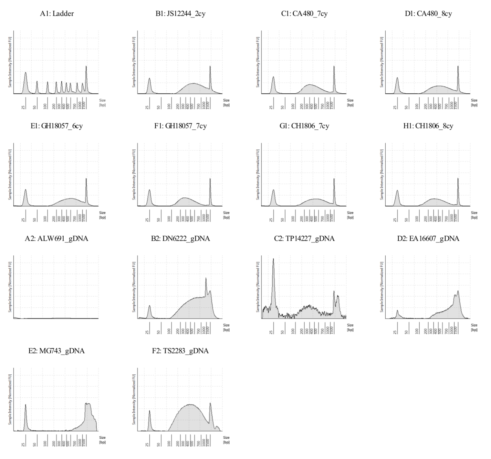

Wet Lab Notebook Template¶
RBGE, November 2021
This is a template for wet lab notebooks. You can download the template file wet_labbook_template.md at the source/ of RBGE’s Bioinformatics repository at GitHub and also at RBGE’s dna/. The template is written in markdown language and can be visualised and edited in your favourite text editor (e.g. Visual Studio Code, Atom, TextWrangler). You could also keep your wet lab notes in Microsoft Word if you prefer, the important thing is to always keep notes.
Create a document similar to this for every procedure you make in the lab. Do not, ever, write on top of another day’s procedure.
Name your files in a informative manner, e.g.:
dnaextraction_begonia_ddmmyyyy.md,re_extraction_begonia_6samples_ddmmyyyy.md,tapestation_sonicated_gDNA_7samples_ddmmyyyy.mdStore a copy of the entries at the
DNA/userdata/yournamefolder at RBGE. Please do keep back up copies (for example using OneNote provided by RBGE).
Here is an example of how a markdown text looks in VSCode (tip: click on the image with the right button of the mouse > open image in new tab to see a larger image).

After your markdown file is done, you can export it in html or pdf formats:
Open the Markdown file.
Press F1 or Ctrl+Shift+P.
Type export and select the preferred option.
Title of experiment:¶
Author:¶
Date:¶
Aims:¶
Physical output documentation:¶
Example: This procedure produces 48 2mL eppendorfs with the extracted genomic DNA that are stored in my drawer in the -20oC freezer on lab 31.
Data documentation:¶
Document here any data output other than this lab book entry. Example: this procedure produces reports in .pdf format. The files are named with the following pattern: tapestation_sampleID_gDNA_ddmmyyyy.pdf and stored on the folder of this lab book which is /Documents/thesis/wetlab/labbooks and backed up on (e.g.) RBGE’s internal folder DNA/userdata/me and One Drive provided by RBGE and on.
Example 2: The gDNA quantities from the qubit are in a excel spreadsheet named xxxx.csv.
Analysis documentation:¶
Example: I produced some graphs with the gDNA content using the script called gdna_extraction_graphs_ddmmyyyy.R stored here.
General procedure schedule:¶
Length of procedure in terms of days:¶
Starting time:¶
Repeat starting and finishing time blocks in case the procedure lasts more than one day.
Finishing time:¶
Possible breaks throughout procedure:¶
Example: this procedure takes around 6 hours and there is a hot bath step of 40 minutes after the first 3 hours, good stop for a lunch break.
What needs to be prepared in advance:¶
Example: This reagent needs to be at room temperature for my procedure, however it lives in the -4oC fridge, so need to remove it from the fridge first thing in the morning, then I can go to the office and prepare myself to start the procedure.
Procedure:¶
Even if you repeat the procedure many times, paste here the steps and add notes to this individual execution of the procedure.
Name of method:¶
If you are following a printed manual/protocol, include the version of it.
Version:¶
List of reagents and where they live:¶
Step by step:¶
Include here the step by step of the lab procedure in form of a list:
If you are following a printed manual/protocol and made any changes, be specific about it.
Data generated¶
Example:
The full tapestation output is in this folder: sonicated_7samples_gDNA_6samples_02072018.pdf

Seven cycles is over-sonicated with average fragment size of 292pb for GH18057, will go with six cycles.
Analysis¶
Include here any analysis you have conducted with the data generated in the lab.
Summary¶
Provide a summary of your findings.
Observations¶
Example: There are 4 lanes left on the tape after this tapestation run, stored on the 4oC fridge on lab 31.